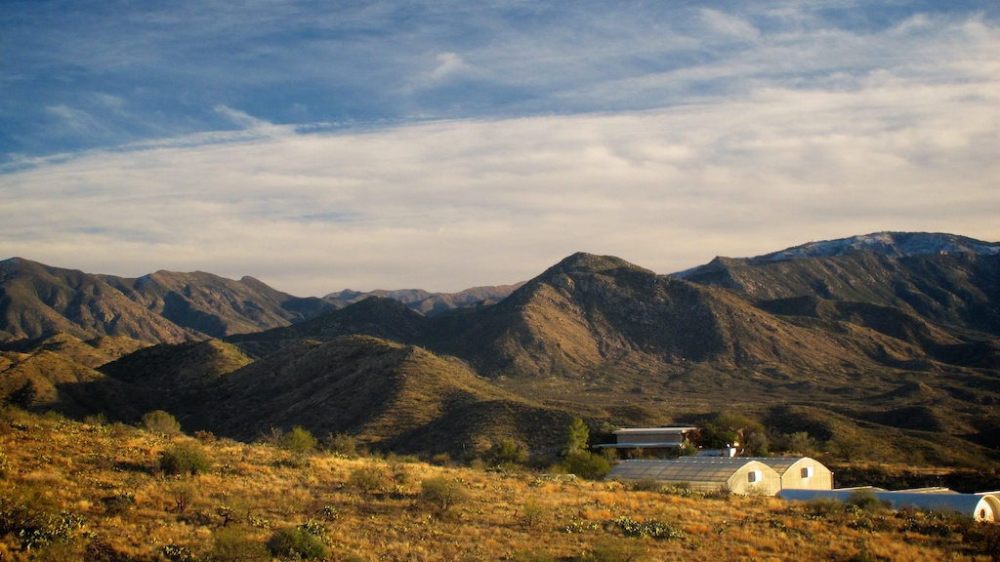
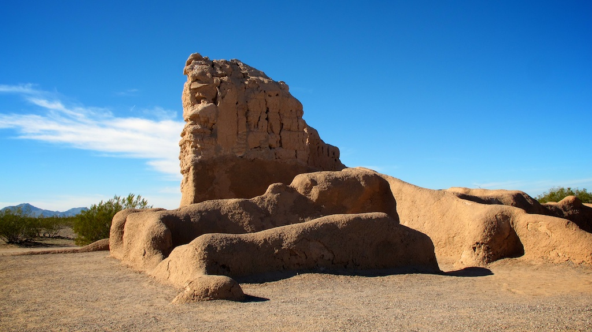

What to Pack for a Week in a Biosphere?
2014-01-16
In January I attended the Harvard ITAMP winter school on ultracold Rydberg physics. The school was held at Biosphere 2, a unique research facility in the desert not far from Tucson. Following the winter school I took a road trip with two friends, Hannes and Henning, up through Arizona and into Utah.
Photos from the Utah part of this trip, here.
Biosphere 2
The biosphere was built in the early 90s as a closed experiment to determine what would be needed to set up bases for future space colonisation. Inside the domes are areas for rainforest, ocean, coral reef, wetlands and desert, with the idea of creating a self-sustaining ecosystem. Kylie Minogue was not there.
Since those 90s missions — when groups of scientists were locked in for up to two years at a time — the centre has been an Earth Sciences research laboratory.
Some bits do look a bit like Center Parcs.

Our accomodations were these pastel Southwestern-style casitas at the biosphere — simple, comfortable.
A forest of cacti on a hike up into the Santa Catalina mountains.
Roadtrip Arizona
With the winter school concluded, we picked up a car to drive north through Arizona and into Utah. Arizona alone is bigger than Britain, so there was a fair bit of driving to do. The first day we set off from Tucson through Phoenix up to Sedona.

A ruin at Casa Grande national monument, a collection of such structures lived in by a ancient Pueblo peoples.
We made it to Sedona and climbed up to Airport Vortex just in time to watch the sun set on the great red sandstone rock formations. Sedona is a beautiful little town with good bars and cafés, full of outdoors shops for hiking, cycling and climbing in the surrounding hills and canyons.
Sedona’s more unusual feature is that it draws in hippies and new-agers who believe the rocks contain ‘spritual power centres’, with the local name of ‘energy vortexes’. So there’s also shops peddling every kind of spiritual nonsense: astrology, palm reading, healing crystals, all that. Even that did little to put me off though, I’d love to go back.
The sun goes down behind Cathedral Rock (on the right), seen in silhouette from Airport Vortex.

The next morning we hiked up to Devil’s Bridge before leaving Sedona.
We left through Oak Creek Canyon on the scenic 89A state road, which makes an ear-popping climb through hairpin turns up to Flagstaff and then beyond on the plateau. Here we’re looking back at Humphreys Peak, the highest point in Arizona at 3,852 metres.
The Colorado River continues its age-old work of cutting its way through the Grand Canyon. ‘I’d echo everything you say…’ From here we drove into Utah.